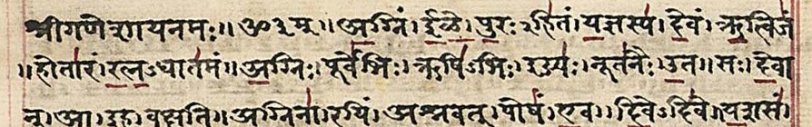

2. Vedic Culture 1500 BC – 600 BC Early (1500–1000 BC) • Later (1000–600 BC)
Marked by the composition of the sacred Vedas (Shruti), pastoral tribal settlement along the Sapta Sindhu, evolution of social stratification, the discovery of Iron (*Shyama Ayas*), and the philosophical awakening of the Upanishads.
*The Boghazkai treaty inscription mentions 4 Vedic deities: Indra, Varuna, Mitra, and Nasatyas, establishing the Indo-Iranian migration route.

1028 hymns arranged into 10 Mandalas. Preserved for millennia through strictly structured oral transmission (*Shruti*).
The Four Vedas & The Vedatrayi
The first three Vedas (Rig, Sama, Yajur) are jointly called Vedatrayi (Trio of Vedas).
Rig Veda
Recited by: Hotri
Oldest religious scripture of mankind. Divided into 10 Mandalas. Mandalas 2 to 7 are the oldest (Gotra / Vamsha Mandalas). Mandalas 1 & 10 were added later.
Sama Veda
Recited by: Udgatri
The "Book of Chants". All hymns except 75 were borrowed directly from the Rig Veda and set to metric rhythm for melodious chanting during Soma sacrifices.
Yajur Veda
Recited by: Adhvaryu
The "Book of Sacrificial Prayers" and ritual formulas. The unique Veda written in both verse and prose. Guidebook for performing oblations.
Atharva Veda
Recited by: Brahma (Chief Priest)
The "Book of Magical Formulae". Contains charms, spells, and incantations to ward off diseases, evil spirits, and demons. Reflected folk religion.
Brahmanas, Aranyakas & Upanishads (Vedanta)
Lucent's breakdown of which Brahmana and Upanishad belongs to which Veda.
| Veda | Reciting Priest | Associated Brahmanas | Upaveda | Famous Upanishads & High-Yield Quotes |
|---|---|---|---|---|
| Rig Veda | Hotri | Aitareya & Kaushitaki (Sankhyayana) | Ayurveda (Medicine) | Aitareya Upanishad: Explains consciousness (*Prajnanam Brahma*). |
| Sama Veda | Udgatri | Panchavimsha (Tandya Maha Brahmana), Sadvimsha, Chhandogya, Jaiminiya | Gandharva Veda (Music) | Chhandogya & Kena: Earliest mention of Lord Krishna (disciple of Ghora Angirasa) & first 3 Ashramas. |
| Yajur Veda | Adhvaryu | Shatapatha (Oldest & largest Brahmana) & Taittiriya | Dhanur Veda (Archery/Warfare) | Brihadaranyaka: Oldest Upanishad; Gargi-Yajnavalkya dialogue; *"Tamaso Ma Jyotirgamaya"*. Also Katha (Yama-Nachiketa dialogue). |
| Atharva Veda | Brahma | Gopatha Brahmana | Shilpa Veda (Architecture) | Mundaka Upanishad: Source of "Satyameva Jayate". Also Mandukya (shortest) and Prashna. |
Six Vedangas (Limbs of the Veda)
Science of correct pronunciation. Text: Pratishakhya (oldest text on phonetics).
Shrauta (sacrifices), Grihya (family), Dharma (law), and Shulba Sutras (earliest Indian geometry for fire altars).
Science of language. Text: Ashtadhyayi by Panini (world's oldest systematic Sanskrit grammar).
Explanation of obscure words. Text: Nirukta by Yaska (based on Nighantu, world's oldest dictionary).
Poetic meters. Famous text: Chhandasutras by Pingala Muni.
Astrological calendar for sacrifices. Text: Vedanga Jyotisha by Lagadha Muni.
Shad-Darshanas (6 Orthodox Philosophies)
Oldest school. Dualism of Purusha (consciousness) and Prakriti (nature).
Ashtanga Yoga (8 limbs) for self-realization. Text: Yoga Sutras.
Logical realism and epistemology. Text: Nyaya Sutras.
First proponent of the Atomic Theory of Matter (*Paramanu*).
Infallibility of Vedas and justification of sacrificial actions.
Vedanta philosophy of Brahman and Atman. Text: Brahma Sutras.
Rigvedic Rivers vs Modern Names
The Nadisukta hymn of Rig Veda (10.75) praises 21 rivers. Sourced directly from Lucent's table.
Sindhu
Modern Name: Indus
The lifeline of the Rigvedic people; mentioned most frequently in the Rigveda.
Saraswati
Modern Name: Ghaggar / Hakra
Called *Matetama* (best mother), *Devitama* (best goddess), and *Naditama* (best river).
Parushni
Modern Name: Ravi (Punjab)
Site of the famous Battle of Ten Kings where King Sudas routed the 10-king coalition.
Vitasta
Modern Name: Jhelum
Flowed through Kashmir and Punjab; Greek *Hydaspes* where Alexander fought Porus.
Asikni
Modern Name: Chenab
Major river of Sapta Sindhu; Greek *Acesines*.
Vipas
Modern Name: Beas
The eastern boundary beyond which Alexander's army refused to advance.
Shutudri
Modern Name: Sutlej
The easternmost river of the Sapta Sindhu basin.
Kubha
Modern Name: Kabul (Afghanistan)
Other Afghan rivers: *Krumu* (Kurram), *Gomati* (Gomal), *Suvastu* (Swat).
Rigvedic / Early Vedic vs Later Vedic Culture
Clear thematic comparison of Polity, Society, Economy, and Religion as structured in Lucent GK.
| Dimension | Early Vedic Period (1500–1000 BC) | Later Vedic Period (1000–600 BC) |
|---|---|---|
| Polity & State |
Tribal Organization: Unit: *Kula* (family) ➔ *Grama* ➔ *Vis* ➔ *Jana* (tribe). The king (*Rajan*) was a tribal chieftain without standing army.
Democratic checks: Sabha (elders), Samiti (general folk), Vidatha (oldest assembly; attended by women). Tax was purely voluntary tribute called Bali. |
Territorial Kingdoms: Formation of *Janapadas*. Monarchy became hereditary and claimed divine origin (*Aitareya Brahmana*).
Grand royal sacrifices: Rajasuya (consecration), Ashvamedha (horse sacrifice for paramountcy), Vajapeya (chariot race). *Vidatha* vanished; *Sabha* & *Samiti* lost popular character; women excluded. Taxes became regular (*Bali*, *Bhaga*, *Shulka*) collected by *Bhagadugha*. King assisted by 12 *Ratnins*. |
| Society & Varna |
Flexible & Occupational: Varna was based on professions, not birth. A hymn in Rigveda states: "I am a poet, my father is a physician, and my mother grinds corn on stone."
Women enjoyed equal status: underwent *Upanayana*, attended assemblies, and composed hymns (Gargi, Maitreyi, Lopamudra, Ghosha, Apala). No child marriage; widow remarriage (*Niyoga*) allowed. |
Rigid & Hereditary Varna: Stratified into Brahmana, Kshatriya, Vaishya, and Shudra based strictly on birth.
Introduction of Gotra (exogamy) and 4 Ashramas (Brahmacharya, Grihastha, Vanaprastha, Sannyasa). Position of women severely declined; lost *Upanayana* rights and political participation. Maitrayani Samhita labels woman as an evil alongside wine and dice. |
| Economy & Technology |
Pastoral Economy: Cattle (*Gau*) was the primary measure of wealth. Wars were fought for cattle (*Gavishti*). Cow was revered as *Aghanya* (not to be killed).
Agriculture was secondary. Barter economy with *Nishka* (gold neckpiece) as unit of value. Metallurgy: *Ayas* referred to copper/bronze. Iron was completely unknown. |
Settled Agrarian Economy: Agriculture became main occupation; Shatapatha Brahmana describes plowing rituals with 24-oxen ploughs.
Breakthrough: Discovery of Iron (Shyama Ayas / Krishna Ayas) around 1000 BC at Atranjikhera (UP), clearing thick Gangetic jungles. Painted Grey Ware (PGW) pottery. Rise of early towns (*Nagara*). |
| Religion & Deities |
Natural Polytheism: Nature personified. No temples, no idol worship. Simple sacrifices for material welfare (sons, cows, victory).
Foremost gods: Indra (Purandara - Thunder/Rain, 250 hymns), Agni (Fire, divine mediator, 200 hymns), Varuna (Cosmic order *Rita*), and Soma (Plant elixir). |
Ritual Dogma & Trimurti: Indra and Agni lost supreme rank. Emergence of the Trinity:
Prajapati (Brahma) as Supreme Creator, Vishnu as Preserver, and Rudra (Shiva) as God of animals/destruction. Pushan became god of Shudras. Sacrifices became excessively costly and monopolized by priests, prompting the Upanishadic philosophical revolt (*Yajnas are leaky boats*). |
Lucent High-Yield Flashcards & Practice MCQs
Frequent questions asked in APSC CCE, UPSC CSE, and State PSCs on Vedic Culture.